Microsoft Azure
Microsoft Azure
Project DescriptionDescripción del Proyecto
This project was created to learn how to use Microsoft Azure's Face AI service, an artificial intelligence solution designed to detect and analyze human faces in images.
To do so, we created a resource in Azure and used its latest SDK, Azure.AI.Vision.Face, in a console application built in Visual Studio.
This SDK lets us apply features such as face detection, facial attribute analysis and recognition of key features.
Este proyecto fue creado con el objetivo de aprender a utilizar el servicio de Face IA de Microsoft Azure, una solución de inteligencia artificial diseñada para detectar y analizar rostros humanos en imágenes.
Para ello, creamos un recurso en Azure y utilizamos su SDK más reciente, Azure.AI.Vision.Face, en una aplicación de consola desarrollada en Visual Studio.
Este SDK nos permite aplicar funcionalidades como la detección de rostros, el análisis de atributos faciales y el reconocimiento de características clave.
Project LinksEnlaces del Proyecto
☁️ Creating the Face AI resourceCreación del recurso Face IA
We go to the Azure portal and create the resource: Face AI.
Debemos ir al portal de Azure y crear el recurso: Face IA.
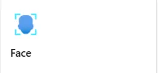
Once the resource is created, we review its details and save the connection credentials, which we will need later in the project.
Una vez creado el recurso, debemos revisar su información y guardar las credenciales de conexión, que necesitaremos más adelante en el proyecto.
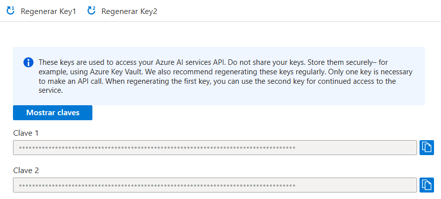
We go to the C# quickstart option to see some examples, or to Vision Studio to explore more of the services.
Vamos a la opción de inicio rápido en C# para ver algunos ejemplos o ir a Vision Studio para explorar más de los servicios.
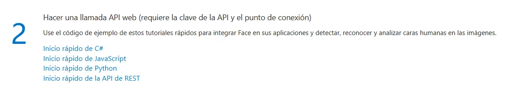
Inside Vision Studio, we check that it is linked to our Azure resource, which we can confirm from the gear icon:
Dentro de Vision Studio, validamos que esté ligado a nuestro recurso de Azure, lo cual podemos confirmar desde el ícono de engranaje:
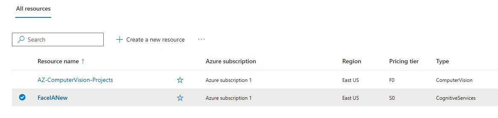
Once the resource is linked, we can use all the services Face AI offers.
Una vez enlazado el recurso, podremos utilizar todos los servicios que Face IA nos ofrece.
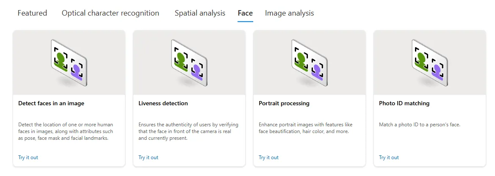
🤖 Installing the Azure AI Vision Face SDKInstalación del SDK Azure AI Vision Face
For this project a .NET 8.0 console application was created. Then we installed the Azure.AI.Vision.Face SDK from NuGet. The option to include pre-release versions must be enabled.
Para este proyecto se creó una aplicación de consola en .NET 8.0. Posteriormente, instalamos el SDK Azure.AI.Vision.Face desde NuGet. Es importante que la opción de incluir versiones preliminares (pre-release) esté activa.
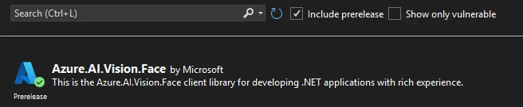
I based the SDK usage on the official Microsoft documentation: Me basé en el uso del SDK en la documentación oficial de Microsoft: 🧠 View official Microsoft documentationVer documentación oficial de Microsoft
We use the credentials from the Face resource we created and an image hosted in Blob Storage.
Usaremos las credenciales obtenidas del recurso de Face creado y una imagen alojada en Blob Storage.
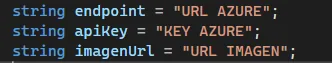
We configure the client.
Configuramos el cliente.
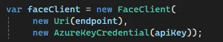
This is the image we will use as an example:
La imagen que utilizaremos como ejemplo es la siguiente:
🧬 Detecting faces in an imageDetección de rostros en una imagen
The Detect faces in an image service is used to detect the faces in an image and obtain different attributes.
Se utilizará el servicio Detect faces in an image para detectar rostros presentes en una imagen y así poder obtener diferentes atributos.
We define the method attributes used in the example.
Se crean los atributos del método que se usarán en el ejemplo.
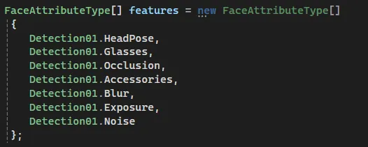
We create the Detect method.
Se crea el método Detect.
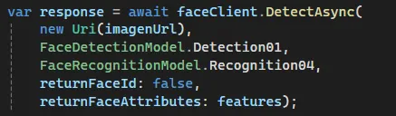
We get the result and loop through the response, which analyzes each face found in the image.
Obtenemos el resultado y recorremos su respuesta, la cual analiza cada uno de los rostros encontrados en la imagen.
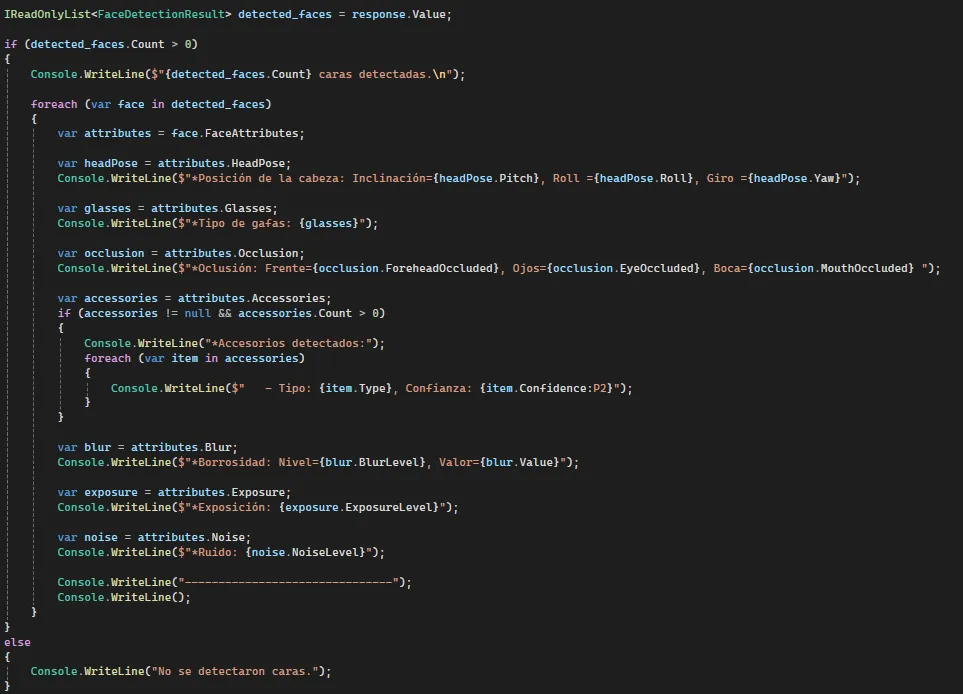
As a result we get:
Como resultado obtenemos:
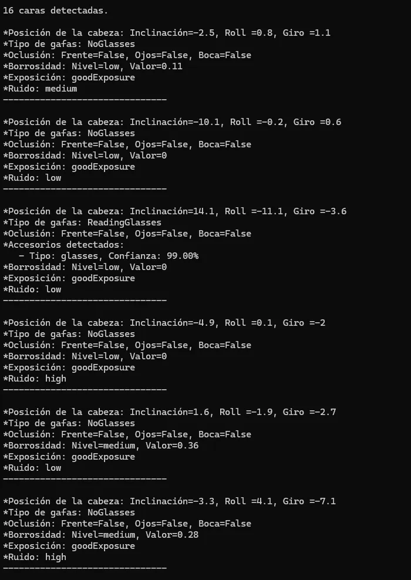